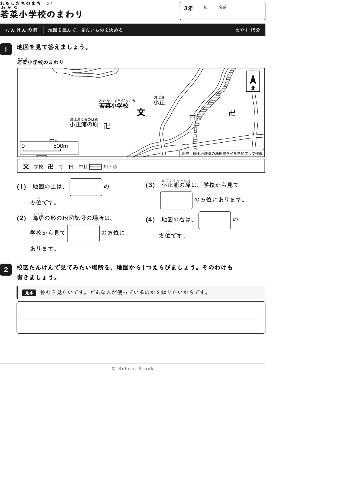
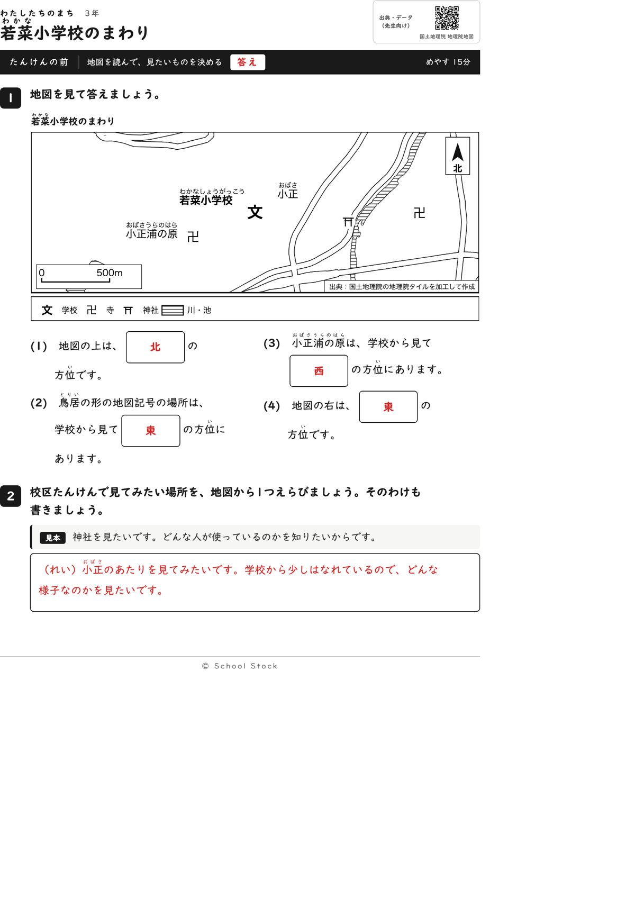
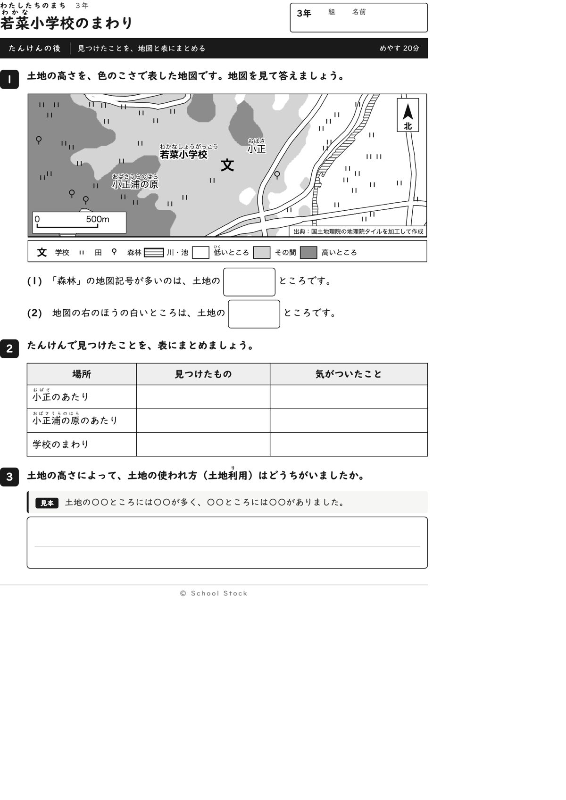
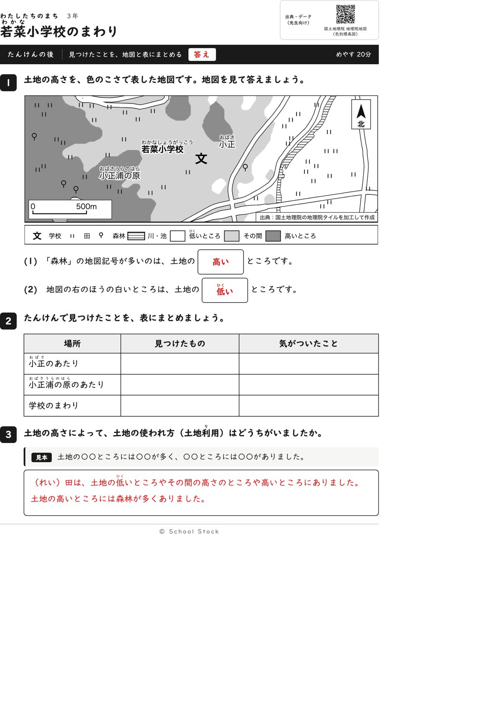
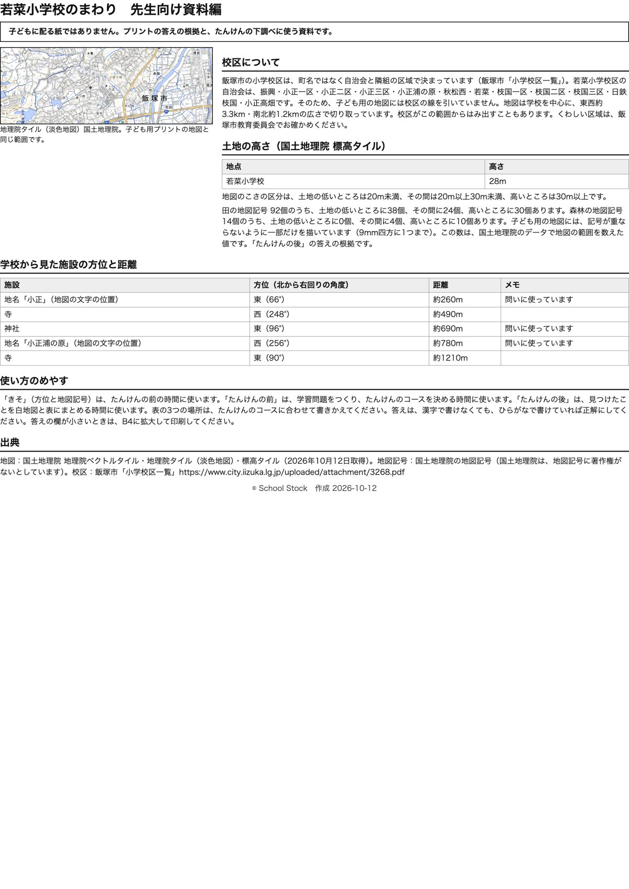

紙





直すところ
直すところはありません。
1回目のレビューで出た直し（1件・道具を直して作り直しました）
| 紙 | どこ | 何が困るか |
|---|---|---|
| 問いは短くて読めます。ただ、学校の記号が二つあって、どっちが自分の学校か迷いそうです。迷ったら止まります。 |
2回目のレビューで出た直し（2件・道具を直して作り直しました）
| 紙 | どこ | 何が困るか |
|---|---|---|
| たんけんの前、たんけんの後 | 地図の左下の縮尺（0と500m） | 縮尺の『500m』が池のしま模様の上に乗り、『後』の地図では森林の記号も池に重なって、文字が読みにくくなっています。 |
| たんけんの前 | 地図の『若菜小学校』の文字と学校の記号 | 学校名の文字が文の記号から離れ、間に郵便局の記号があります。名前が郵便局のことに見えて、(3)の『学校の西にある郵便局』を探すときに迷う子が出ます。 |
専門家団の声（いまの紙を見て）
香月八重筆頭・全学年
学校名が文の左どなりに移り、ほかの記号の上に乗らなくなりました。郵便局の記号は地図から外れ、方位の問いは神社と地名で組まれています。縮尺も読めます。三年の順序は合っています。
日隈耕平社会
鳥居は東（96度）、小正浦の原は西（256度）で、地図の位置と資料編の数字が合っています。田92個は低いところ38、その間24、高いところ30、森林14個は高いところ10で、「森林が多いのは高いところ」と合います。右のほうの白いところは低いところで、田の記号が並んでいます。学校名が文のそばにあるので、地図の作法にも合っています。
藤川湊すぐ終わる子
問いはすぐ終わります。(2)と(4)の答えがどちらも東なのは、問う中身が違うので気になりません。
田淵さくら例がないと止まる子
「北」「鳥居」「小正浦の原」と地図から探せて、見本のある2番も同じ型で選べます。学校の字と文がくっついているので、どれが学校か迷いません。
轟大和読む前に諦める子
文の横に学校の名前があり、ここが学校だとすぐ分かります。たんけんの後の問いも、右のほうの白いところと場所が決まっていて動けます。